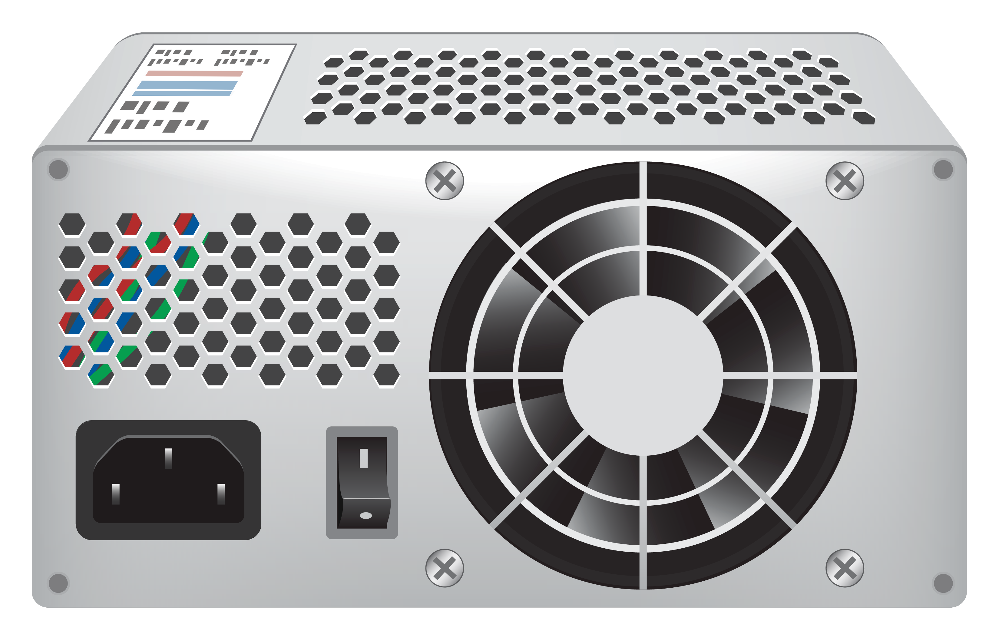
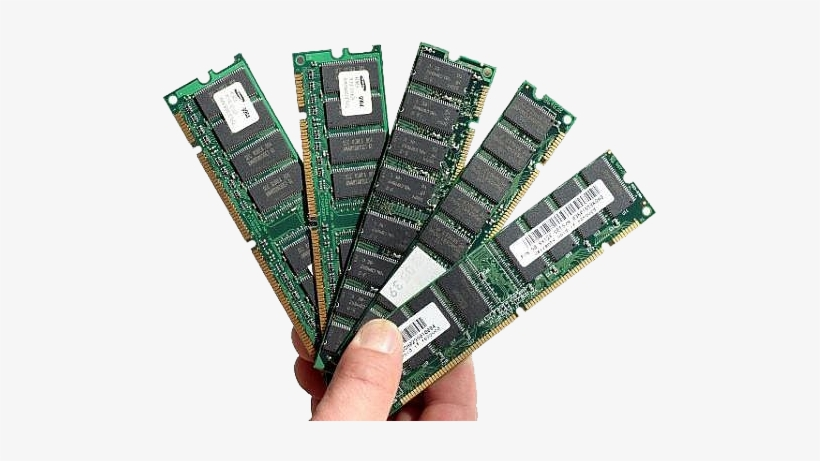
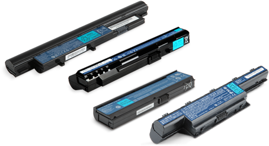

Hardware
Motherboard

You don't have to hang out with tech professionals all day to have heard the term "motherboard." This critical component of the modern PC plays an important role in keeping your computer running. But what does a motherboard do? How can you make sure it's functioning correctly? Is it possible to replace it yourself? We answer all your motherboard-related questions in this simple guide.
A motherboard is one of the most difficult parts to diagnose and repair, so it’s worth considering extra buyer protection so that you don't have to worry about failure. The HP Care Pack, for example, will cover even accidental damage to computers where the motherboard may be affected. It's often better to pay for additional coverage than try to resolve this costly fix on your own.
Power Supply

A power supply is an electrical device that supplies electric power to an electrical load. The main purpose of a power supply is to convert electric current from a source to the correct voltage, current, and frequency to power the load. As a result, power supplies are sometimes referred to as electric power converters. Some power supplies are separate standalone pieces of equipment, while others are built into the load appliances that they power. Examples of the latter include power supplies found in desktop computers and consumer electronics devices. Other functions that power supplies may perform include limiting the current drawn by the load to safe levels, shutting off the current in the event of an electrical fault, power conditioning to prevent electronic noise or voltage surges on the input from reaching the load, power-factor correction, and storing energy so it can continue to power the load in the event of a temporary interruption in the source power (uninterruptible power supply).
RAM

RAM (Random Access Memory) is the hardware in a computing device where the operating system (OS), application programs and data in current use are kept so they can be quickly reached by the device's processor. RAM is the main memory in a computer. It is much faster to read from and write to than other kinds of storage, such as a hard disk drive (HDD), solid-state drive (SSD) or optical drive.
Random Access Memory is volatile. That means data is retained in RAM as long as the computer is on, but it is lost when the computer is turned off. When the computer is rebooted, the OS and other files are reloaded into RAM, usually from an HDD or SSD.
Laptop Battiries

A battery is a hardware component that supplies power to a device, enabling that device to work without a power cord. Batteries are often capable of powering a laptop computer for several hours depending on how much power it requires. Today, many high-end devices like computer laptops and cell phones use rechargeable batteries that allow a user to recharge the battery when depleted of energy. The picture below is an example of a laptop battery with a close-up of the battery rating.